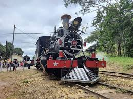

Trem Maria Fumaça – Uma Viagem Nostálgica Pelas Paisagens de Minas
O Trem Maria Fumaça é um dos passeios turísticos mais encantadores de Minas Gerais, transportando seus passageiros para uma verdadeira viagem no tempo. Com vagões históricos e locomotivas a vapor, essa experiência combina nostalgia, história e paisagens deslumbrantes, passando por cidades charmosas e preservando a essência da era das ferrovias. O apito da locomotiva e o balanço suave sobre os trilhos recriam a atmosfera de uma época em que o trem era o principal meio de transporte pelo interior do estado.
Um dos trajetos mais famosos é o Trem da Vale, que liga Ouro Preto a Mariana, percorrendo um cenário de montanhas, túneis e pontes centenárias. Durante o percurso de aproximadamente uma hora, os passageiros podem admirar belas paisagens naturais e conhecer mais sobre a história da Estrada de Ferro, que teve papel fundamental no desenvolvimento da região. Outra rota clássica é o Trem São João del-Rei a Tiradentes, onde a locomotiva a vapor conduz os visitantes por um trajeto repleto de charme, cruzando fazendas, rios e estações históricas que preservam a arquitetura do século XIX.
Mais do que um simples meio de transporte, o passeio de Maria Fumaça é uma imersão na cultura mineira. Durante a viagem, apresentações musicais e guias caracterizados resgatam as tradições locais, tornando a experiência ainda mais envolvente. Ao chegar aos destinos, os turistas encontram cidades históricas repletas de igrejas, museus e ruas de pedra, onde a história colonial de Minas Gerais se mantém viva.
Ideal para quem deseja reviver o passado e contemplar as belezas do interior mineiro, o Trem Maria Fumaça proporciona um passeio inesquecível, repleto de charme, história e nostalgia. Seja ouvindo o som característico da locomotiva, sentindo o vento no rosto ou admirando as paisagens ao longo dos trilhos, essa viagem é um convite para descobrir Minas Gerais de uma maneira única e encantadora.
